发信人: taofangying (色. 驴), 信区: outdoor
标 题: 三尖摄影贴，只贴图，欢迎童鞋们看图说话
发信站: 饮水思源 (2010年11月30日21:59:09 星期二)
清晨拔营时三个八宝男
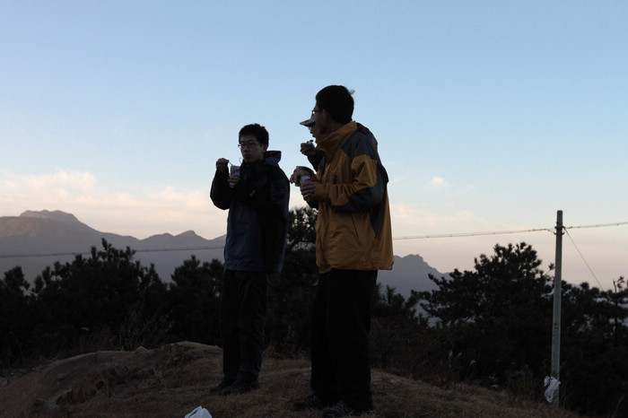 screen.width - 200){this.width = screen.width - 200}">
如果这可以算日照金山的话……
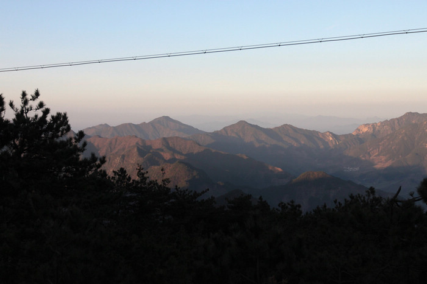 screen.width - 200){this.width = screen.width - 200}">
这个孤独的影子是谁？

初上山顶
screen.width - 200){this.width = screen.width - 200}">
踩在山顶的感觉
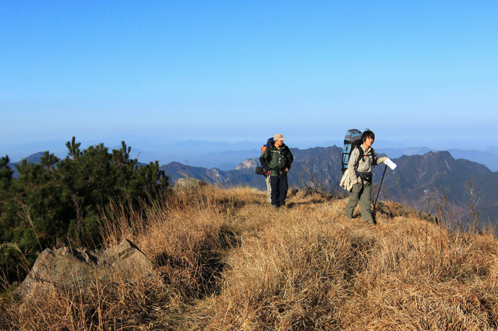 screen.width - 200){this.width = screen.width - 200}">
同学们很努力的往上爬
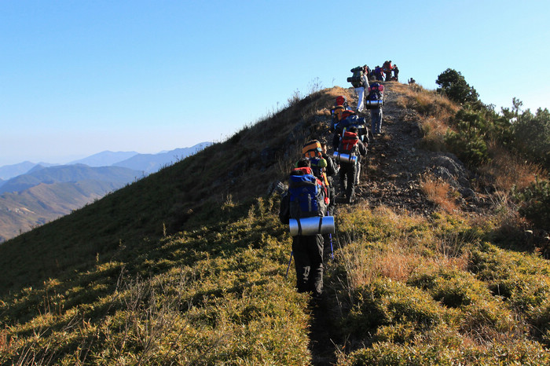 screen.width - 200){this.width = screen.width - 200}">
日照山头
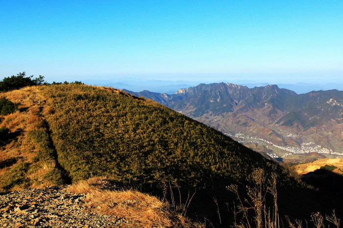 screen.width - 200){this.width = screen.width - 200}">
小lomo一下自己~
screen.width - 200){this.width = screen.width - 200}">
伊人却在阳光灿烂处……

过草地
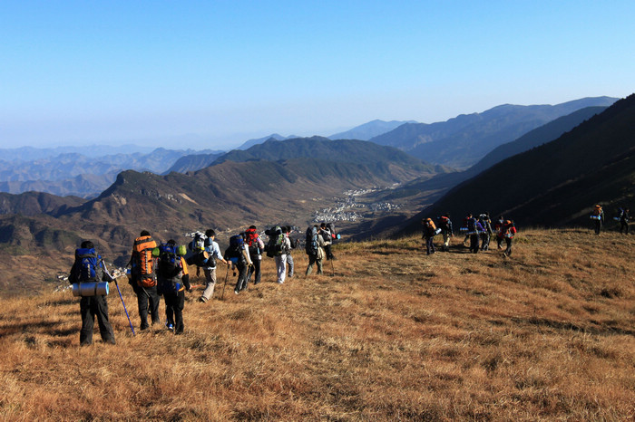 screen.width - 200){this.width = screen.width - 200}">
三尖惊艳照一
screen.width - 200){this.width = screen.width - 200}">
惊艳照二
screen.width - 200){this.width = screen.width - 200}">
三
screen.width - 200){this.width = screen.width - 200}">
四（颜色做过）
screen.width - 200){this.width = screen.width - 200}">
依旧很努力的往上爬
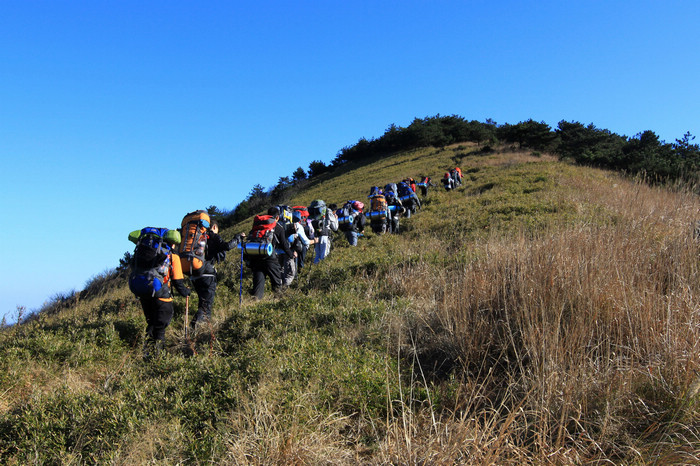 screen.width - 200){this.width = screen.width - 200}">
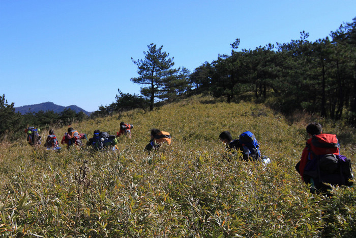 screen.width - 200){this.width = screen.width - 200}">
整齐划一的队伍啊！
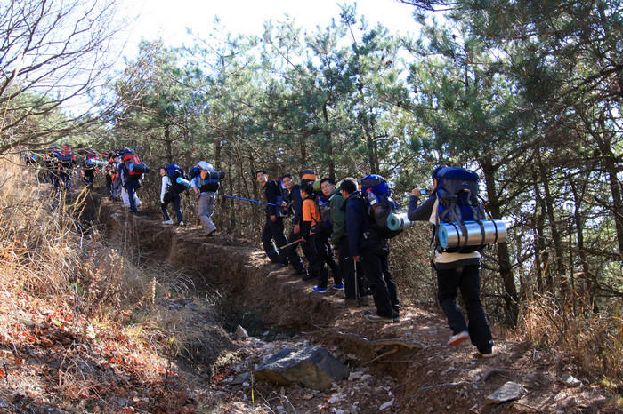 screen.width - 200){this.width = screen.width - 200}">
独孤的行走
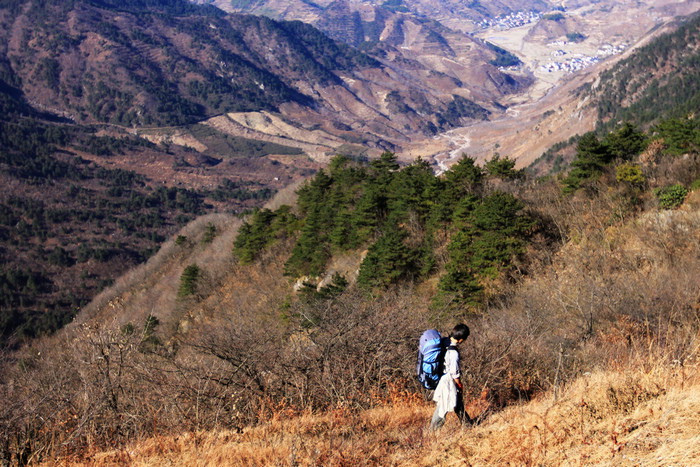 screen.width - 200){this.width = screen.width - 200}">
卸包休息的挫样~
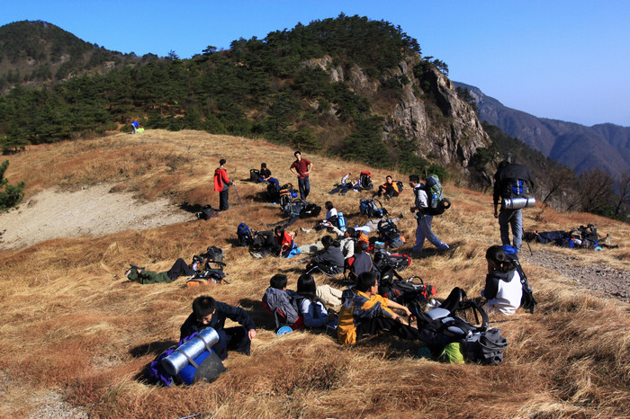 screen.width - 200){this.width = screen.width - 200}">
集体照，摄影师就悲剧了~
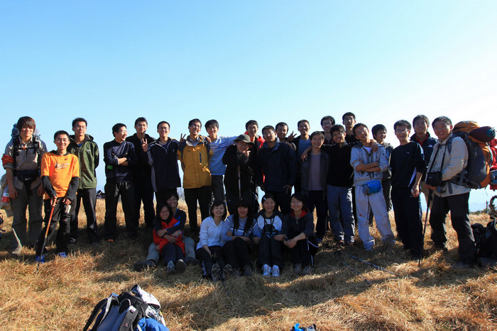 screen.width - 200){this.width = screen.width - 200}">
三尖女生合影

帅哥结尾吧~
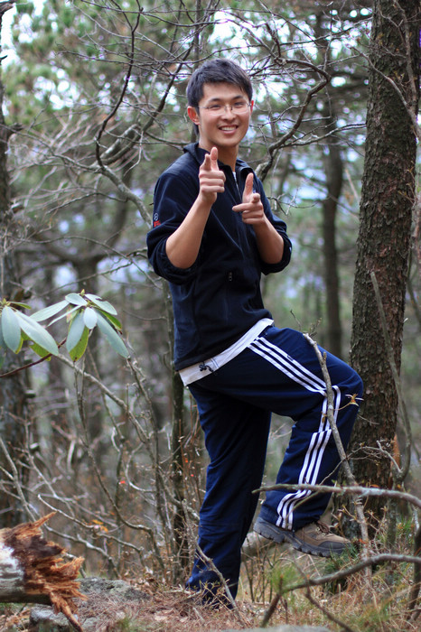 screen.width - 200){this.width = screen.width - 200}">
--
终究还是爱户外多过爱摄影~
※ 来源:·饮水思源 bbs.sjtu.edu.cn·[FROM: 202.120.52.83]
|